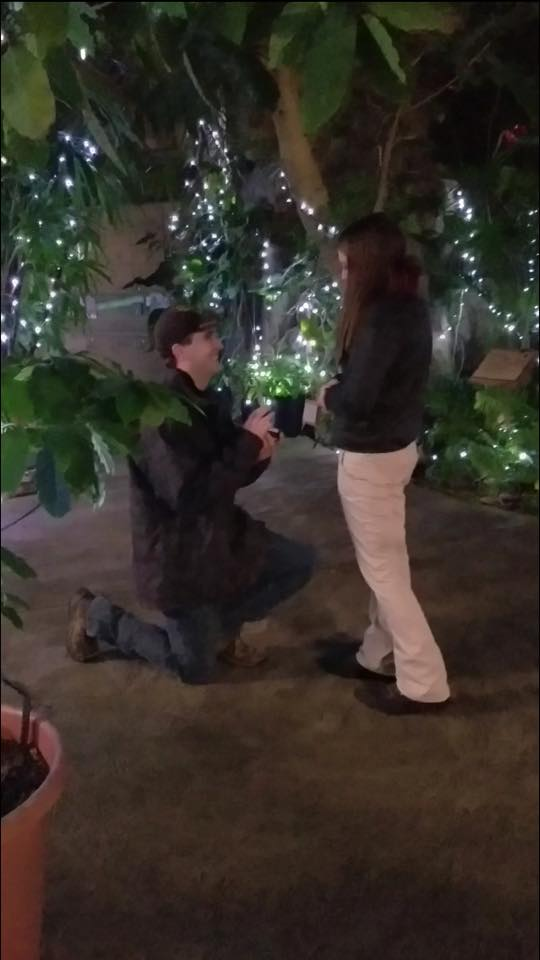

Our Story
Thomas and I met in August of 2014 at the Cincinnati Zoo. I was interning for the Wild Encounters department and he was a temporary primate keeper. We specifically met in the Zoo's housing, where we were both living during our time at the zoo. After spending about a week of talking and watching T.V., Thomas surprised me with a bag full of my favorite cookies (oatmeal raisin) that he had made with his Aunt Lisa during our weekend off. We were lucky to have the same off days. Thomas asked me to go on our first actual date to a restaurant called the Cactus Pear in Cincinnati a week later. After spending a couple of months together, living in the center of Cincinnati and work caught up with Thomas. He decided that living in the city and working at the zoo was something he couldn't do anymore. He wanted to move back home and pursue a different job opportunity. Long distance was not something that we wanted to try so we said our goodbyes to each other. I was heartbroken to see him gone.
About 8 months after Thomas made his move back to Minnesota, he realized that everything else in Cincinnati may have not been everything he had wanted but his girlfriend was pretty awesome. He realized he had made a mistake in letting me go and wanted me back in his life. After many conversations and late night Facetime calls, we saw each other for the first time in almost a year when he visited to look for apartments. Towards the end of January of 2016 Thomas moved down here to give our relationship another try. He has been down here ever since and we are both very happy. He asked me to marry him at the Festival of Lights at the Cincinnati Zoo with much help from his old coworkers at Wild Encounters. I was completely surprised… ☺
Photo Gallery
The Proposal
Meet Larz!

Hi, my name is Larz and I am an African Pygmy Hedgehog. I was born on December 13, 2016. My parents adopted me on February 13, 2017. My favorite things to do are eat, sleep and run on my wheel at night. My favorite toy is my dad's old hat. I also love to go outside, the smell of my Uncle Ben's shirt, snuggling with mom on the couch and being in front of the webcam during family chats. Burrowing under things is my specialty. I am not a big fan of taking a bath, getting my nails clipped, or being woke up to play. Mealworms are my favorite treat, but crickets and chicken I'm not a fan of.